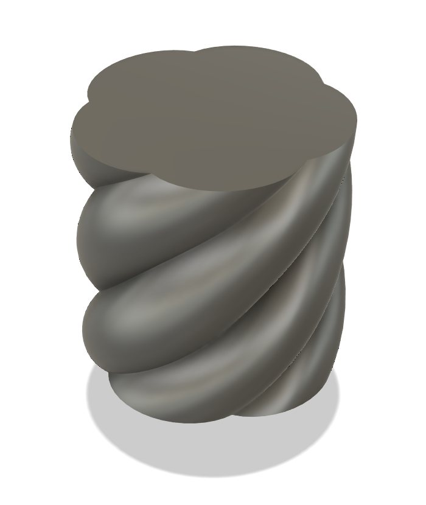
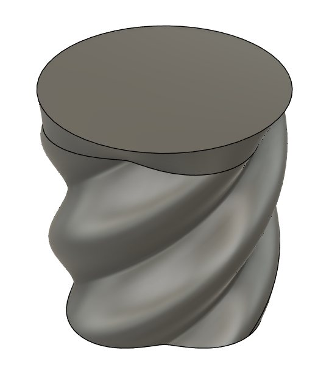
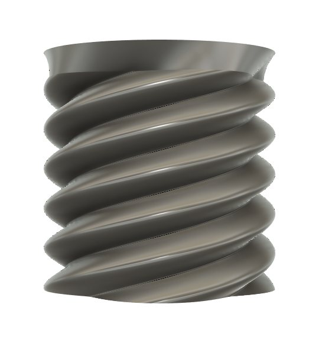
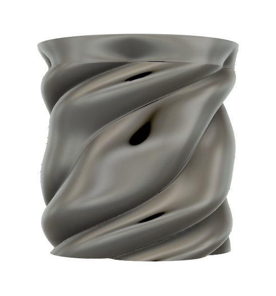
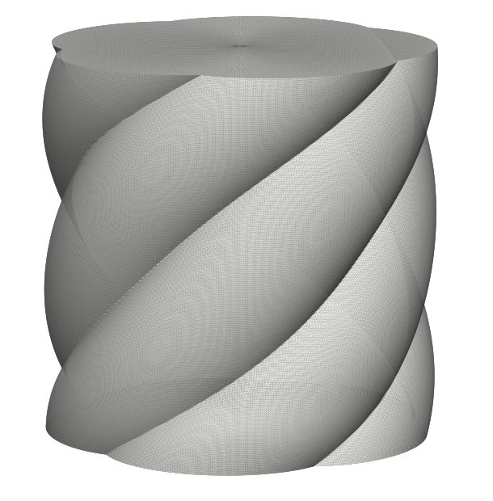
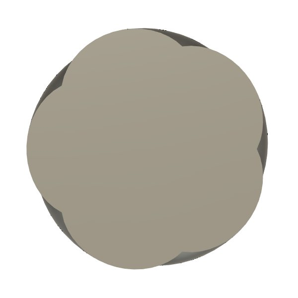

AI-assisted CAD · Fusion 360 · 3D printing
Designing in Fusion 360 with AI
In progress
A retail display plinth for a sneaker launch: a soft, twisted "cloud" column that a single shoe sits on. I connected an AI agent to Fusion 360, directed it in plain language through four design rounds, and ended the same afternoon with a parametric Fusion model that prints in one piece on my Bambu H2D.

01 · The workflow
I direct, the AI drafts, Fusion holds the model
The AI agent had a live connection to Fusion 360 on my laptop. It wrote and ran the modelling scripts itself, took screenshots of the result, and I judged each one. I never typed a sketch dimension by hand. My job was the part AI can't do alone: knowing what looks right and what my printer can actually make.
02 · The brief
A soft shape that still prints clean
The reference was a puffy, rope-like column. The sample had to be 315 mm wide and 320 mm high, white, and printed in one piece on the H2D, which only just fits that diameter. So the design had to look soft while staying inside a tight build volume, with no support marks on a white surface.
03 · Directing the AI
Four rounds of plain-language feedback
- Smooth sweep: the first lofts rippled between sections, so the AI rebuilt it as one twisted sweep. Clean, but plain.
- "Double the swirls": more twist turned it into a screw thread, and the undersides went nearly flat, which would need supports.
- "Not threads, make it flow up like the render": the AI generated the surface in Python so the twist could vary up the height. My note back: the tubes looked squeezed.
- "The tubes must be a consistent diameter": five true round tubes of equal size. That was the look, and it stays printable.




04 · Making it printable
Checked by numbers, not by eye
For every version the AI measured how much of the side surface faces downward more steeply than 45°, the usual limit for printing without supports. The final shape scores zero, so it prints with no supports and no scars to sand off a white finish.
05 · Native CAD
AI-written, but a real Fusion model
A generated mesh prints fine but is hard to edit, so I had the AI rebuild the final version as native Fusion features: five helix paths, a circular tube swept along each, joined to a centre core, then trimmed flat. The client can now ask for thicker tubes or more twist, and it's a one-number change.

What I'd do next
Print the sample on the H2D, check the first layer and the lobe undersides on the real machine, then fillet the top edge if the client wants it softer.
Client and brand are deliberately not named. Publish only with the client's written OK.